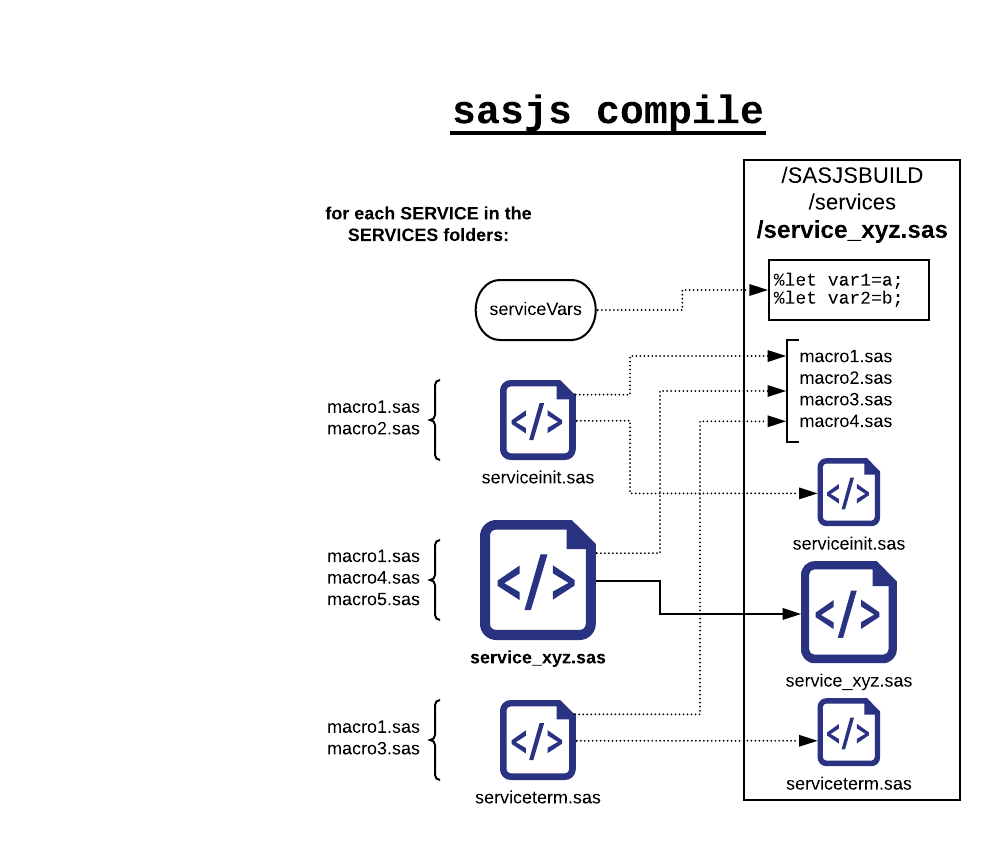
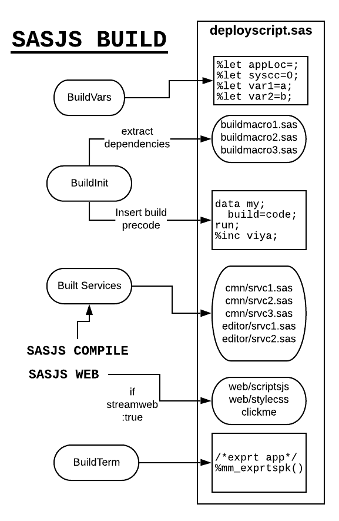

SASJS-CLI¶
The CLI tool fulfills 3 main purposes:
- Creation of a project repository in an 'opinionated' way
- Compilation each service, including all the dependent macros / macro variables and pre / post code
- Build - creation of the master SAS deployment, including build macros, macro variables, and pre/post code
- Deployment - execute an array of local scripts and remote SAS programs to create your app on the SAS Server
There is also a feature to let you deploy your frontend as a service, bypassing the need to access the SAS Web Server.
Installation¶
The tool must be installed globally in order to function as a command. Simply run:
npm i -g sasjs-cli
Project Creation¶
To create a new project, run: sasjs create mynewproject
To install in an existing project, change into that directory and run: sasjs create (without arguments). This will create a sas folder inside the directory.
Compilation¶
From the root of the project, run: sasjs compile. This will take all of the macros in the services folder and create equivalents in the sasbuild folder. Each service will contain all of the dependent macros as listed under dependencies in the header, as well as the serviceinit.sas and serviceterm.sas files.

If streamWeb is true then the index.html file in your webSourcePath is scanned and any linked JS / CSS files are also compiled into the streamWebFolder folder. The index.html becomes a clickme service in your appLoc SAS folder root.
Base64 encoding¶
If you don't have an index.html and you just want to compile arbitrary binary content (such as images, mp3, excel files etc) as base64 services, set the location of the content in assetPaths. All files in the specified folder(s) will be turned into web services.
Build¶
From the root of the project, run: sasjs build. This will create a deployment script that can be executed in SAS to create the backend services. The appLoc is configured in the /sas/config.json file, along with the serverType (SAS9 or SASVIYA). A buildinit.sas program can be configured to run, along with specific macro variables (tgtBuildVars), according to the settings in sasjsconfig.json.
If you have sensitive build variables (such as an access_token) you can set these in a .env file in your project root.
If the services folder does not exist in the sasjsbuild folder, then the sasjs compile step is also executed. The alias to run both compile and build steps is sasjs cb.

Viya Build Script¶
The Viya build script requires a number of variables to be prepared by an administrator. Execute the following:
filename mc url "https://raw.githubusercontent.com/sasjs/core/main/all.sas"; %inc mc; %let client=MyClient; %let secret=MySecret; %mv_getapptoken(client_id=&client,client_secret=&secret)
%mv_getrefreshtoken(client_id=&client,client_secret=&secret,code=wKDZYTEPK6)
The ACCESS_TOKEN and REFRESH_TOKEN are now in the log. In future, when running sasjs build for a Viya target, the following values must be provided:
%let client=MyClient; %let secret=MySecret; /* these values are long - split over multiple lines with %trim()*/ %let ACCESS_TOKEN=MyGeneratedAccessToken; %let REFRESH_TOKEN=MyGeneratedRefreshToken;
The above can then be securely placed in a read-protected directory (such as a home directory on the SAS server) and %inc'd.
Warning
Saving security tokens in project repositories, especially if they are committed to source control, is a security risk - as anyone with access can use them to make modifications on the Viya platform. Be sure to use a secure mechanism such as the %inc approach described above, or another approved mechanism for securing these kinds of variables.
Deploy¶
The build program generated in the previous step can be deployed in 3 ways:
1 - MANUAL: copy paste the code into SAS Studio or Enterprise Guide and run it
2 - SSH: build a shell script or bat file to load, and execute with a web service
3 - API: Use the SAS APIs
Points 2 and 3 can be configured / executed with a single sasjs deploy or sasjs d command. You can compile, build AND deploy using sasjs cbd [target]. If you don't specify a target (eg sas9 or viya) then the first target in the sasjsconfig.json file is used.
CopyPaste approach¶
The build script (named as per buildOutputFileName) can be copy pasted into SAS Studio and executed to create the backend services. Please note:
- You will be running under your own identity. If you need files created under the Web Server identity, deploy your build script using a web service.
- For Viya, you must use SASStudioV (or ensure the client/secret/access_token are provided)
SSH approach¶
You can SSH (rsync or scp) your build script onto the SAS Server then %inc it from a web service - the web service could be created using the code below:
filename mc url "https://raw.githubusercontent.com/sasjs/core/main/all.sas"; %inc mc; filename ft15f001 temp; parmcards4; %inc "/path/to/your/sasjsdeploy.sas"/source2; ;;;; %mp_createwebservice(name=Executor, code=ft15f001 ,replace=YES)
You can now create a local script (eg mysas9deploy.sh) and add it to the tgtDeployScripts array (the root is always the sasjs folder).
echo "sasjs: uploading frontend" rsync -avz /home/me/myapp/dist/* me@sasserver:/var/www/html/myapp echo "sasjs: uploading deploy program" scp sasjsbuild/mysas9deploy.sas me@sasserver:/tmp/mysas9deploy.sas echo "sasjs: running Executor" curl -v -L -k -b cookiefile -c cookiefile "$URL&$CREDS"
API Approach¶
Any files in your tgtDeployScripts array that have a ".sas" extension will be sent to the relevant API (9 or Viya) for execution.
Viya API deployment¶
The Viya deploy requires 3 things:
- access_token
- serverUrl
- contextName
In order of priority, the access_token is taken from the following locations:
tgtDeployVarstgtBuildVars- the
.envfile. This is the preferred / recommended location!
The serverUrl is the location of your Viya server. The contextName is the execution service on which your SAS code will execute. You can get a list of available contexts by running a GET to the following endpoint: /compute/contexts
SAS 9¶
For SAS 9 deployment we integrate with SAS9API by Analytium (https://sas9api.io), you can contact them for a free trial copy.
Configuration as follows:
"tgtDeployVars": {
"serverName": "SASApp",
"repositoryName": "Foundation"
},
"serverUrl": "http://SASSERVER:PORT",
Demo¶
A 2 minute video demonstrating how an app can be built and a deployment script created is shown below.